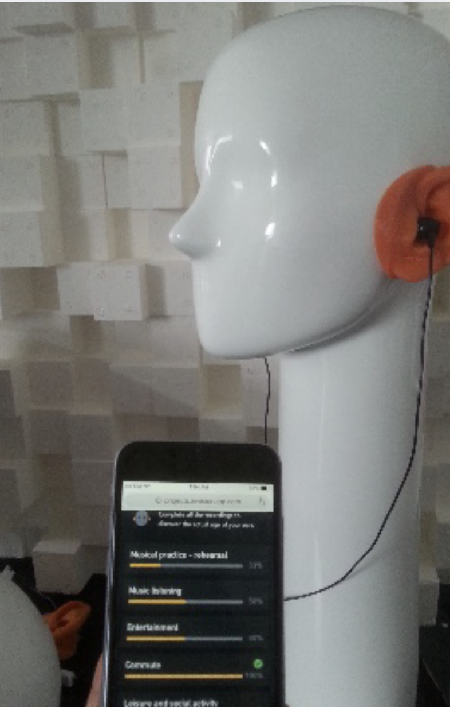
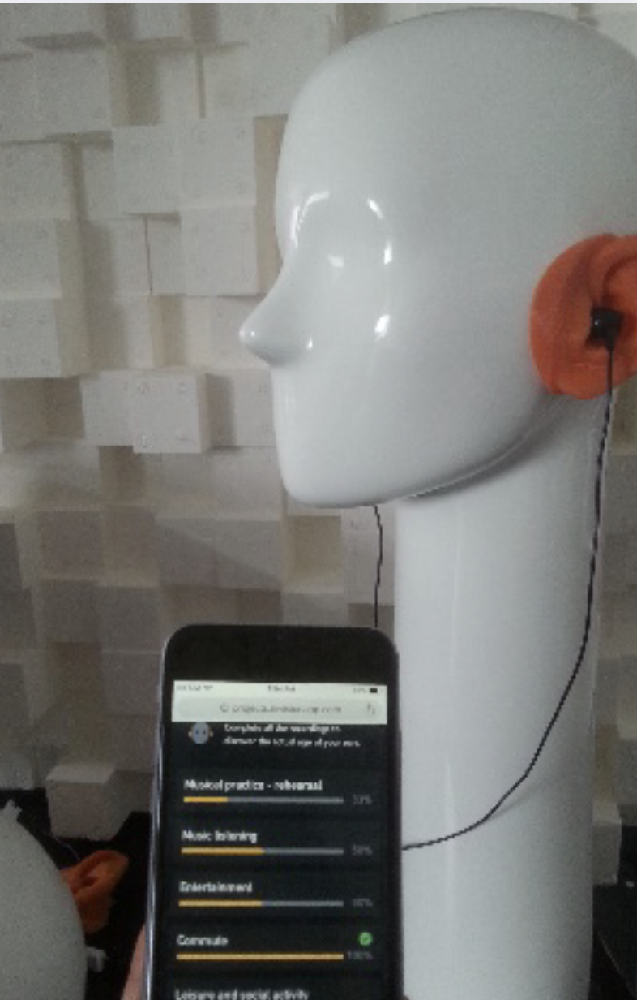

Selected Projects
Here are some of the exciting projects I've been working on, blending education, technology, and creativity to make learning musical instruments more fun and engaging.
MEI-Trumpet is an educational web application that supports users in mastering musical competencies. The app facilitates learning through guided repetition, structured reflection, and multi-sensory engagement, addressing critical technical and auditory skills.
By allowing students to set custom parameters, MEI-Trumpet adapts to different skill levels, creating a personalized learning experience. Starting with a beginner-friendly interface, users can customize their practice by selecting:
- ⏰ Metronome Speed: Adjust the tempo for practice.
- 🎵 Lowest Note & Highest Note: Define a custom range of notes to focus on.
The image below shows the interactive controls where students can set these parameters before starting an exercise.
Each exercise is structured in three steps:
- The first measure is a rest, allowing the student to prepare
- The second measure plays a reference note, offering an example to imitate
- The third measure is for the user to play the note
On the top of the screen, an image showing the correct trumpet fingering, including adjustments for the third valve slide, is displayed. This helps students easily associate the note shown on the musical staff with the corresponding pitch and valve combination.

MEI-Trumpet is available as a free beta version for both web and mobile devices:


Advancing Your Skills!
Once users get the hang of playing the right note, scaffolding helps them take it to the next level!
Intonation and Dynamics
Adding a chromatic tuner and dynamic markings, users are encouraged to fine-tune their pitch and volume control bringing more expression and style to their playing.

Clear Articulation
The latest feature of the Music Education Interface I am working on introduces articulation assessment. A state-of-the-art digital signal processing algorithm measures the attack transient duration in milliseconds, providing users with real-time feedback on their articulation clarity.
"Attack clarity is finding the purity and the best beginning of sound"
Achieving a clean and controlled attack is a crucial skill for musicians, influencing both technical precision and artistic expression. The articulation analysis tool enables users to experiment with different attack styles (e.g., staccato, détaché, martelé) while receiving real-time feedback on their performance. By analyzing the transient development of their sound, students gain deeper control over articulation, allowing them to make more informed musical choices and refine their expressive capabilities.
Audio Examples!
Compare the difference between an unclear and a clean articulation:
Unclean Attack
Clean Attack
Enhancing Sound Quality with Machine Learning
To further refine the student's technique, a machine learning model was integrated into the learning interface to classify sounds based on their timbral quality. This functionality introduces a new layer of complexity, helping users develop their musical competencies.
Watch the DEMO:
What's next?
Future developments of this project focus on enhancing its capabilities through adaptive learning features. The Music Education Interface aims to integrate generative AI to provide a more personalized and inclusive learning experience. Key advancements include:
- 🎯 Personalized exercises tailored to students’ technical level, age, and progression speed.
- 📊 AI-driven analysis of student performance, offering recommendations for refining learning activities.
- 💡 A user-friendly, code-free interface enabling music educators to design and deploy customized exercises.
- 🌍 Enhanced inclusivity and accessibility, ensuring diverse learning experiences for students of all backgrounds and abilities.
The objective is to make music education more engaging, effective, and adaptable to individual needs.
Research Background
MEI-Trumpet is part of an open-source research project led by Alberto Acquilino at the Schulich School of Music of McGill University, in collaboration with the International Neuroinformatics Coordinating Facility (INCF). Ongoing studies aim to further define the pedagogical foundations of the interface and discuss its usability and social validity through groups of participants.
The source code for the app is publicly available here.
El Sistema Student Compass
The El Sistema Student Compass is an innovative platform designed to support young musicians' holistic development by integrating music education with well-being tracking. By leveraging validated psychological models and data-driven insights, this tool empowers students, teachers, and administrators in El Sistema-inspired programs worldwide.
Key Features
- 📊 Holistic Well-being Assessment: Incorporates the PERMA framework and other validated models to track students' psychological and emotional growth alongside their musical progress.
- 🎵 Music Education & Data Tracking: Provides real-time insights into students' practice habits, progress, and engagement, helping teachers tailor instruction more effectively.
- 🎮 Gamified Interactive Learning: Uses interactive feedback, badges, and progress tracking to keep students engaged and motivated in their musical journey.
Impact & Future Development
The Student Compass is designed to foster a deeper connection between music education and student well-being. With its data-driven approach, it enables personalized support for each musician while equipping educators with valuable insights to enhance their teaching strategies.
Future developments aim to scale the platform for broader educational applications, integrating AI-driven analytics and expanding to additional El Sistema-inspired programs globally.

Hearing Care Platform
The Hearing Care Platform (HCP) is an initiative aimed at raising awareness about noise exposure and hearing health, particularly among musicians.
App Development
As part of this project, a custom mobile app was developed to help musicians and individuals assess their sound exposure from both music and non-music activities. The app provides a personalized assessment of listening habits and potential hearing risks.
User Research and Development
In addition to the app, a measuring kiosk was launched, allowing participants to analyze their headphone listening levels using their own devices. This approach ensures a more accurate and personalized assessment of hearing exposure.
 

As part of this initiative, research was conducted to refine the platform's effectiveness in promoting hearing conservation. The project involved leading user research sessions with musicians and students to evaluate their sound exposure levels and gather insights on hearing care practices.
By combining innovative technology with real-world data collection, this platform contributes to the broader goal of improving hearing health awareness and influencing hearing conservation policies.